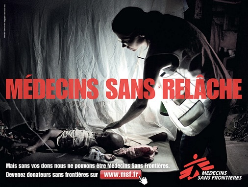

Médecins Sans Frontières est une association médicale humanitaire internationale, créée en 1971 à Paris par des médecins et des journalistes. Depuis plus de quarante ans, Médecins Sans Frontières apporte une assistance médicale à des populations dont la vie ou la santé est menacée : principalement en cas de conflits armés, mais aussi d'épidémies, de pandémies, de catastrophes naturelles ou encore d'exclusion des soins. Toutes ces situations nécessitent des ressources médicales et logistiques adaptées.
